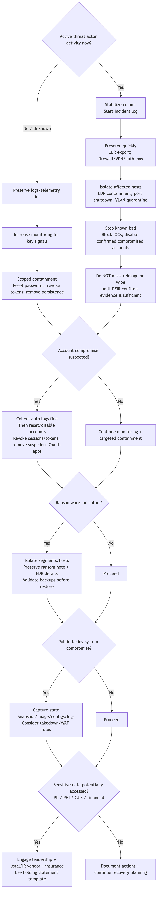

DFIR
DFIR: The First 24 Hours (Public Sector)
A single page you can hand to leadership during an incident. Keep it calm, factual, and logged.
Executive Summary (1 page)
Goals
- Preserve evidence
- Contain safely (without destroying artifacts)
- Establish command-and-control
- Communicate reliably
Leadership decisions you’ll be asked to make
- Downtime approvals / emergency changes
- What services must remain online
- Whether to engage outside IR/forensics and counsel
- Public communications posture (holding statement)
Rule of thumb: If you think you might need it later (logs, evidence, screenshots), collect/export it before making big changes.
0–2 hours (do immediately)
- Start an incident log (who/what/when). Assign a single scribe.
- Stabilize communications (out-of-band contact list; bridge line/chat).
- Preserve key logs/telemetry: EDR alerts, firewall/VPN logs, email security logs, SIEM, cloud audit logs.
- Snapshot before changes when possible (VM snapshots, triage images, config exports).
- Identify scope: impacted systems, business-critical services, suspected entry point.
2–8 hours (containment)
- Segment affected subnets; restrict east-west traffic.
- Disable compromised accounts; rotate credentials with a plan.
- Block known IOCs at edge + EDR.
Containment decision tree (visual)
This is a starter aid—not a substitute for incident-specific judgment.

8–24 hours (recovery prep)
- Validate backups (restore test) before trusting them.
- Decide: rebuild vs clean.
- Plan communications (internal, leadership, public-facing).